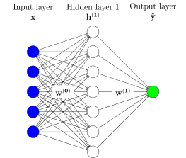
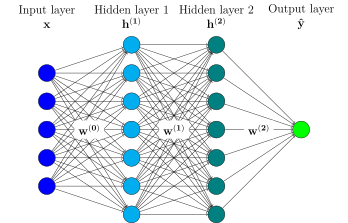

Perceptrons multicouches
Contents
Perceptrons multicouches#
Dans le chapitre précédent, nous avons vu un modèle très simple appelé le perceptron. Dans ce modèle, la sortie prédite \(\hat{y}\) est calculée comme une combinaison linéaire des caractéristiques d’entrée plus un biais :
En d’autres termes, nous optimisions parmi la famille des modèles linéaires, qui est une famille assez restreinte.
Empiler des couches pour une meilleure expressivité#
Afin de couvrir un plus large éventail de modèles, on peut empiler des neurones organisés en couches pour former un modèle plus complexe, comme le modèle ci-dessous, qui est appelé modèle à une couche cachée, car une couche supplémentaire de neurones est introduite entre les entrées et la sortie :

La question que l’on peut se poser maintenant est de savoir si cette couche cachée supplémentaire permet effectivement de couvrir une plus grande famille de modèles. C’est à cela que sert le théorème d’approximation universelle ci-dessous.
Théorème d’approximation universelle
Le théorème d’approximation universelle stipule que toute fonction continue définie sur un ensemble compact peut être approchée d’aussi près que l’on veut par un réseau neuronal à une couche cachée avec activation sigmoïde.
En d’autres termes, en utilisant une couche cachée pour mettre en correspondance les entrées et les sorties, on peut maintenant approximer n’importe quelle fonction continue, ce qui est une propriété très intéressante. Notez cependant que le nombre de neurones cachés nécessaire pour obtenir une qualité d’approximation donnée n’est pas discuté ici. De plus, il n’est pas suffisant qu’une telle bonne approximation existe, une autre question importante est de savoir si les algorithmes d’optimisation que nous utiliserons convergeront in fine vers cette solution ou non, ce qui n’est pas garanti, comme discuté plus en détail dans le chapitre dédié.
En pratique, nous observons empiriquement que pour atteindre une qualité d’approximation donnée, il est plus efficace (en termes de nombre de paramètres requis) d’empiler plusieurs couches cachées plutôt que de s’appuyer sur une seule :

La représentation graphique ci-dessus correspond au modèle suivant :
Pour être précis, les termes de biais \(b^{(l)}_i\) ne sont pas représentés dans la représentation graphique ci-dessus.
De tels modèles avec une ou plusieurs couches cachées sont appelés Perceptrons multicouches (ou Multi-Layer Perceptrons, MLP).
Décider de l’architecture d’un MLP#
Lors de la conception d’un modèle de perceptron multicouche destiné à être utilisé pour un problème spécifique, certaines quantités sont fixées par le problème en question et d’autres sont des hyper-paramètres du modèle.
Prenons l’exemple du célèbre jeu de données de classification d’iris :
import pandas as pd
iris = pd.read_csv("../data/iris.csv", index_col=0)
iris
| sepal length (cm) | sepal width (cm) | petal length (cm) | petal width (cm) | target | |
|---|---|---|---|---|---|
| 0 | 5.1 | 3.5 | 1.4 | 0.2 | 0 |
| 1 | 4.9 | 3.0 | 1.4 | 0.2 | 0 |
| 2 | 4.7 | 3.2 | 1.3 | 0.2 | 0 |
| 3 | 4.6 | 3.1 | 1.5 | 0.2 | 0 |
| 4 | 5.0 | 3.6 | 1.4 | 0.2 | 0 |
| ... | ... | ... | ... | ... | ... |
| 145 | 6.7 | 3.0 | 5.2 | 2.3 | 2 |
| 146 | 6.3 | 2.5 | 5.0 | 1.9 | 2 |
| 147 | 6.5 | 3.0 | 5.2 | 2.0 | 2 |
| 148 | 6.2 | 3.4 | 5.4 | 2.3 | 2 |
| 149 | 5.9 | 3.0 | 5.1 | 1.8 | 2 |
150 rows × 5 columns
L’objectif ici est d’apprendre à déduire l’attribut « cible » (3 classes différentes possibles) à partir des informations contenues dans les 4 autres attributs.
La structure de ce jeu de données dicte :
le nombre de neurones dans la couche d’entrée, qui est égal au nombre d’attributs descriptifs dans notre jeu de données (ici, 4), et
le nombre de neurones dans la couche de sortie, qui est ici égal à 3, puisque le modèle est censé produire une probabilité par classe cible.
De manière plus générale, pour la couche de sortie, on peut être confronté à plusieurs situations :
lorsqu’il s’agit de régression, le nombre de neurones de la couche de sortie est égal au nombre de caractéristiques à prédire par le modèle,
quand il s’agit de classification
Dans le cas d’une classification binaire, le modèle aura un seul neurone de sortie qui indiquera la probabilité de la classe positive,
dans le cas d’une classification multi-classes, le modèle aura autant de neurones de sortie que le nombre de classes du problème.
Une fois que ces nombres de neurones d’entrée / sortie sont fixés, le nombre de neurones cachés ainsi que le nombre de neurones par couche cachée restent des hyper-paramètres du modèle.
Fonctions d’activation#
Un autre hyper-paramètre important des réseaux neuronaux est le choix de la fonction d’activation \(\varphi\).
Il est important de noter que si nous utilisons la fonction identité comme fonction d’activation, quelle que soit la profondeur de notre MLP, nous ne couvrirons plus que la famille des modèles linéaires. En pratique, nous utiliserons donc des fonctions d’activation qui ont un certain régime linéaire mais qui ne se comportent pas comme une fonction linéaire sur toute la gamme des valeurs d’entrée.
Historiquement, les fonctions d’activation suivantes ont été proposées :
import numpy as np
%config InlineBackend.figure_format = 'svg'
%matplotlib inline
import matplotlib.pyplot as plt
from notebook_utils import prepare_notebook_graphics
prepare_notebook_graphics()
def tanh(x):
return 2. / (1. + np.exp(-2 * x)) - 1.
def sigmoid(x):
return 1. / (1. + np.exp(-x))
def relu(x):
y = x.copy()
y[y < 0] = 0.
return y
x = np.linspace(-4, 4, 50)
plt.figure(figsize=(12, 4))
plt.subplot(1, 3, 1)
plt.plot(x, tanh(x))
plt.grid('on')
plt.ylim([-1.1, 4.1])
plt.title("tanh")
plt.subplot(1, 3, 2)
plt.plot(x, sigmoid(x))
plt.grid('on')
plt.ylim([-1.1, 4.1])
plt.title("sigmoid")
plt.subplot(1, 3, 3)
plt.plot(x, relu(x))
plt.grid('on')
plt.ylim([-1.1, 4.1])
plt.title("ReLU");
En pratique, la fonction ReLU (et certaines de ses variantes) est la plus utilisée de nos jours, pour des raisons qui seront discutées plus en détail dans notre chapitre consacré à l’optimisation.
Le cas particulier de la couche de sortie#
Vous avez peut-être remarqué que dans la formulation du MLP fournie par l’équation (1), la couche de sortie possède sa propre fonction d’activation, notée \(\varphi_\text{out}\). Cela s’explique par le fait que le choix de la fonction d’activation pour la couche de sortie d’un réseau neuronal est spécifique au problème à résoudre.
En effet, vous avez pu constater que les fonctions d’activation abordées dans la section précédente ne partagent pas la même plage de valeurs de sortie. Il est donc primordial de choisir une fonction d’activation adéquate pour la couche de sortie, de sorte que notre modèle produise des valeurs cohérentes avec les quantités qu’il est censé prédire.
Si, par exemple, notre modèle est censé être utilisé dans l’ensemble de données sur les logements de Boston dont nous avons parlé dans le chapitre précédent, l’objectif est de prédire les prix des logements, qui sont censés être des quantités non négatives. Il serait donc judicieux d’utiliser ReLU (qui peut produire toute valeur positive) comme fonction d’activation pour la couche de sortie dans ce cas.
Comme indiqué précédemment, dans le cas de la classification binaire, le modèle aura un seul neurone de sortie et ce neurone produira la probabilité associée à la classe positive. Cette quantité devra se situer dans l’intervalle \([0, 1]\), et la fonction d’activation sigmoïde est alors le choix par défaut dans ce cas.
Enfin, lorsque la classification multi-classes est en jeu, nous avons un neurone par classe de sortie et chaque neurone est censé fournir la probabilité pour une classe donnée. Dans ce contexte, les valeurs de sortie doivent être comprises entre 0 et 1, et leur somme doit être égale à 1. À cette fin, nous utilisons la fonction d’activation softmax définie comme suit :
où, pour tous les \(i\), les \(o_i\) sont les valeurs des neurones de sortie avant application de la fonction d’activation.
Déclarer un MLP en keras#
Pour définir un modèle MLP dans keras, il suffit d’empiler des couches.
A titre d’exemple, si l’on veut coder un modèle composé de :
une couche d’entrée avec 10 neurones,
d’une couche cachée de 20 neurones avec activation ReLU,
une couche de sortie composée de 3 neurones avec activation softmax,
le code sera le suivant :
from tensorflow.keras.layers import Dense, InputLayer
from tensorflow.keras.models import Sequential
model = Sequential([
InputLayer(input_shape=(10, )),
Dense(units=20, activation="relu"),
Dense(units=3, activation="softmax")
])
model.summary()
Model: "sequential"
_________________________________________________________________
Layer (type) Output Shape Param #
=================================================================
dense (Dense) (None, 20) 220
dense_1 (Dense) (None, 3) 63
=================================================================
Total params: 283
Trainable params: 283
Non-trainable params: 0
_________________________________________________________________
Notez que model.summary() fournit un aperçu intéressant d’un modèle défini et de ses paramètres.
Exercice #1
En vous basant sur ce que nous avons vu dans ce chapitre, pouvez-vous expliquer le nombre de paramètres retournés par model.summary() ci-dessus ?
Solution
Notre couche d’entrée est composée de 10 neurones, et notre première couche est entièrement connectée, donc chacun de ces neurones est connecté à un neurone de la couche cachée par un paramètre, ce qui fait déjà \(10 \times 20 = 200\) paramètres.
De plus, chacun des neurones de la couche cachée possède son propre paramètre de biais, ce qui fait \(20\) paramètres supplémentaires.
Nous avons donc 220 paramètres, tels que sortis par model.summary() pour la couche "dense (Dense)".
De la même manière, pour la connexion des neurones de la couche cachée à ceux de la couche de sortie, le nombre total de paramètres est de \(20 \times 3 = 60\) pour les poids plus \(3\) paramètres supplémentaires pour les biais.
Au total, nous avons \(220 + 63 = 283\) paramètres dans ce modèle.
Exercice #2
Déclarez, en keras, un MLP avec une couche cachée composée de 100 neurones et une activation ReLU pour le jeu de données Iris présenté ci-dessus.
Solution
model = Sequential([
InputLayer(input_shape=(4, )),
Dense(units=100, activation="relu"),
Dense(units=3, activation="softmax")
])
Exercice #3
Même question pour le jeu de données sur le logement à Boston présenté ci-dessous (le but ici est de prédire l’attribut PRICE en fonction des autres).
Solution
model = Sequential([
InputLayer(input_shape=(6, )),
Dense(units=100, activation="relu"),
Dense(units=1, activation="relu")
])
boston = pd.read_csv("../data/boston.csv")[["RM", "CRIM", "INDUS", "NOX", "AGE", "TAX", "PRICE"]]
boston
| RM | CRIM | INDUS | NOX | AGE | TAX | PRICE | |
|---|---|---|---|---|---|---|---|
| 0 | 6.575 | 0.00632 | 2.31 | 0.538 | 65.2 | 296.0 | 24.0 |
| 1 | 6.421 | 0.02731 | 7.07 | 0.469 | 78.9 | 242.0 | 21.6 |
| 2 | 7.185 | 0.02729 | 7.07 | 0.469 | 61.1 | 242.0 | 34.7 |
| 3 | 6.998 | 0.03237 | 2.18 | 0.458 | 45.8 | 222.0 | 33.4 |
| 4 | 7.147 | 0.06905 | 2.18 | 0.458 | 54.2 | 222.0 | 36.2 |
| ... | ... | ... | ... | ... | ... | ... | ... |
| 501 | 6.593 | 0.06263 | 11.93 | 0.573 | 69.1 | 273.0 | 22.4 |
| 502 | 6.120 | 0.04527 | 11.93 | 0.573 | 76.7 | 273.0 | 20.6 |
| 503 | 6.976 | 0.06076 | 11.93 | 0.573 | 91.0 | 273.0 | 23.9 |
| 504 | 6.794 | 0.10959 | 11.93 | 0.573 | 89.3 | 273.0 | 22.0 |
| 505 | 6.030 | 0.04741 | 11.93 | 0.573 | 80.8 | 273.0 | 11.9 |
506 rows × 7 columns